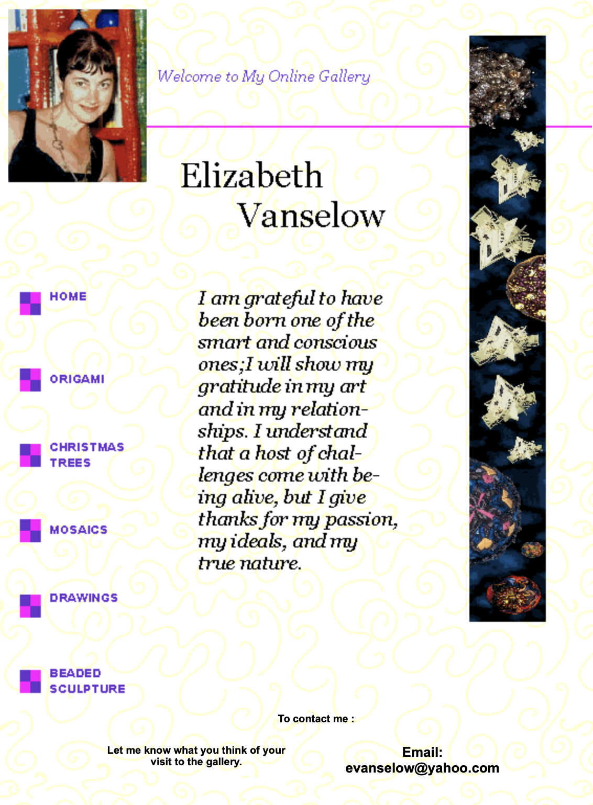
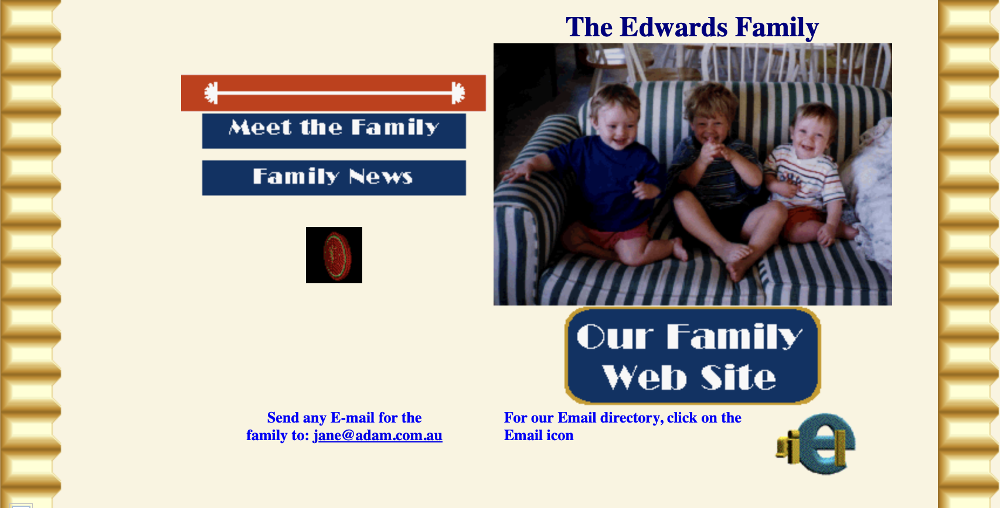
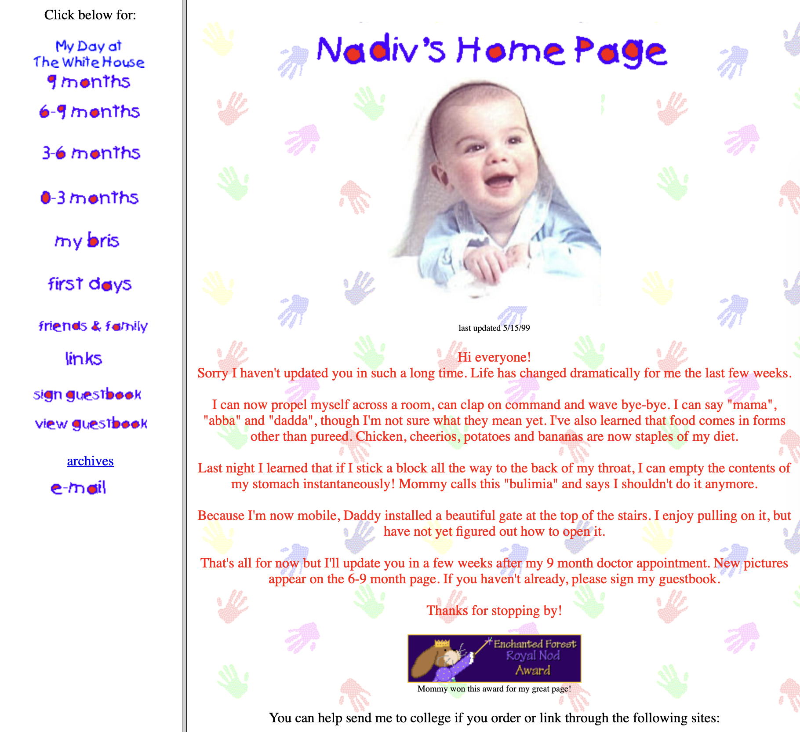
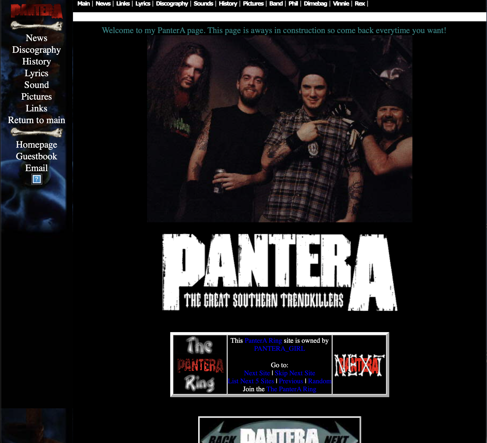
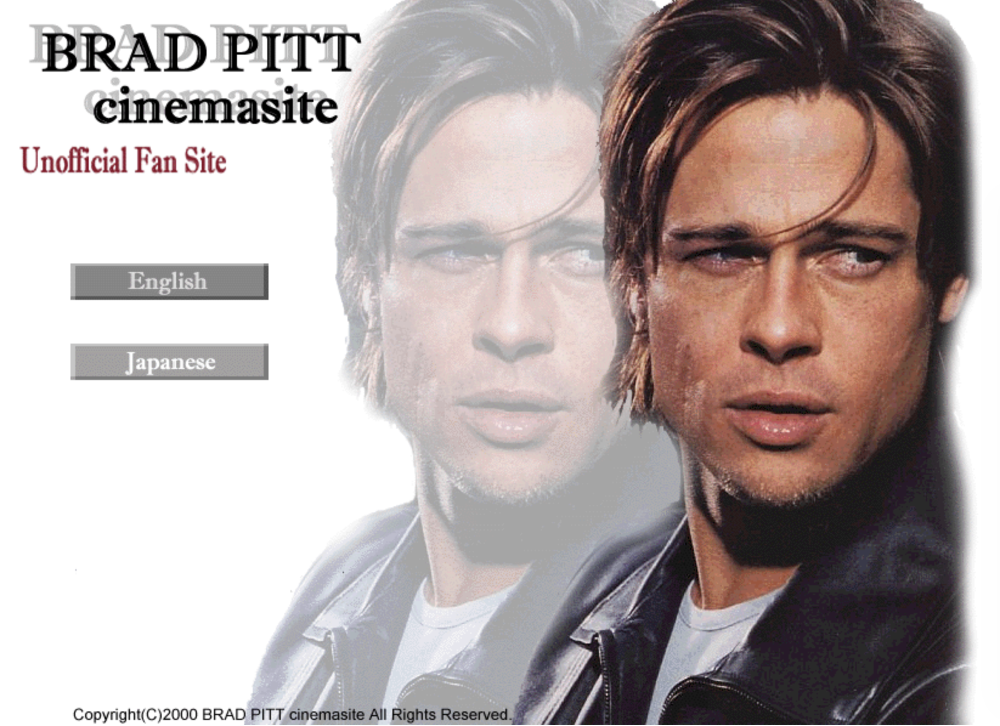
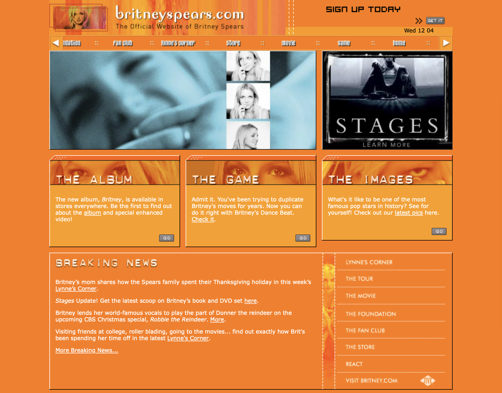
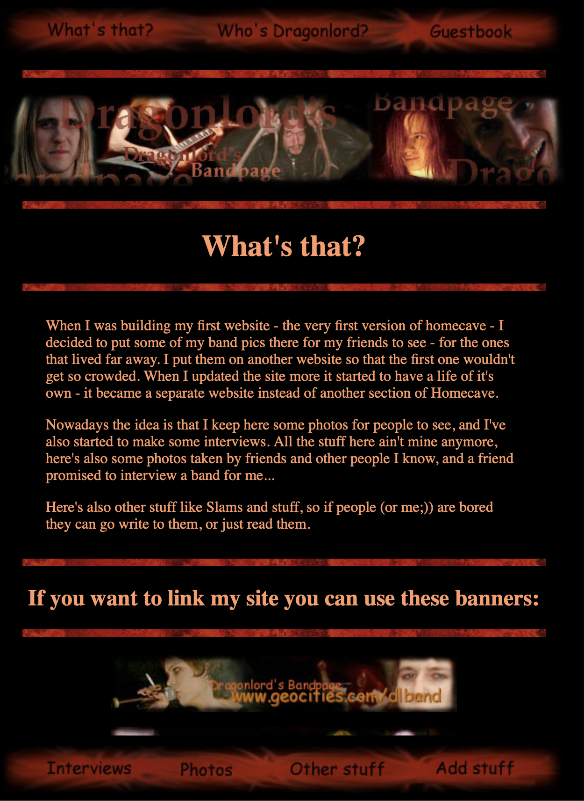
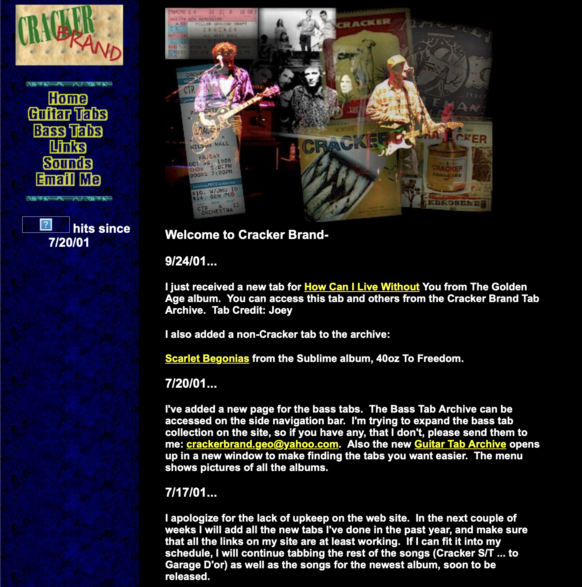
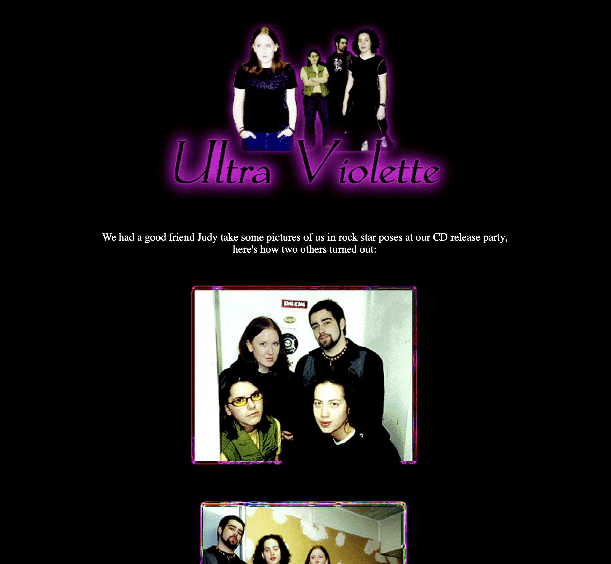

Personal websites were one of the most common and important parts of the early internet. Instead of large platforms or social media, people created their own webpages to share information about themselves, their interests, and their creative work. These sites were often informal and very personalized.
Many personal websites were created using basic HTML and hosted on platforms like GeoCities, AngelFire, or Tripod. These platforms made it possible for anyone to build a website, even with just basic html and css experience. Family websites were also very common. Many people created websites to share photos and updates about their families, and some even dedicated entire pages to newborn babies, documenting milestones and growth, similar to digital scrapbooks.


Fansites
A lot of personal websites were also dedicated to specific interests, such as favorite bands, TV shows, or hobbies. These fan pages included images, information, and personal opinions, and they helped connect people who shared the same interests.


Musician/Band sites
In addition to fan-made pages, big musicians and smaller or local bands often created their own websites to promote their music. These sites typically included show dates, contact information, and downloadable songs or demos. Before social media platforms and streaming services became popular, personal websites were one of the main ways for musicians to connect with audiences and share their work online.




Guestbooks
Guestbooks were a common feature on early personal websites that allowed visitors to leave messages for the site owner. Similar to a comment section, guestbooks gave visitors a way to share their thoughts, say hello, or respond to the content of the site. Messages were usually displayed publicly, creating a visible record of who had visited the page.